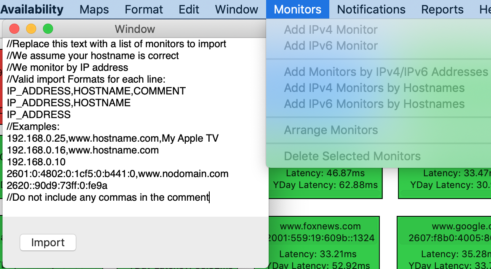
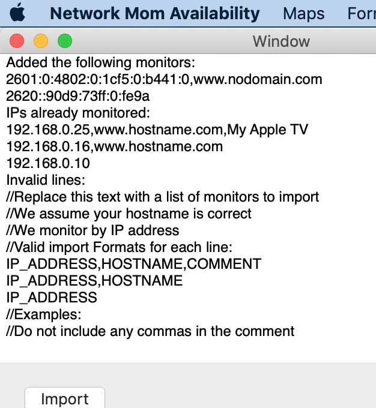

Adding multiple monitors by IP addresses
The best way to add a large number of monitors to a map is by a list of hostnames or IP addresses. Highlight the map you want to add monitors to and select Monitors -> Add Monitors by IPv4/IPv6 addresses. 
Simply pasting in a list of IP addresses (one per line) will be successful, but you can input a list of hosts in the following formats:
ipaddress
ipaddress, hostname
ipaddress, hostname, comment
Each IP address could be IPv4 or IPv6. Do not include commas in the comment. When you click import , Network Mom Availability will import each line and report which lines are imported successfully and unsuccessfully. IPs already monitored will not be duplicated. Network Mom Availability assumes your hostname<->IP address mappings are correct. All monitoring is done by IP address.

After adding a large number of monitors, it may be helpful to use the Monitors -> Arrange Monitors command. This will arrange all monitors on that map (both new ones and existing ones) in a rough alphabetized grid. This rearrangement cannot be undone.
https://networkmom.net feedback@networkmom.net Copyright 2019 Network Mom LLC